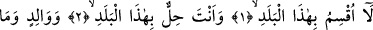
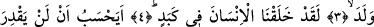
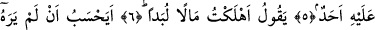
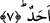
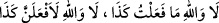
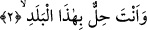

KİMSE ONU GÖRMEDİ Mİ SANIYOR?
Bismillâhirrahmânirrahîm
1. Bu beldeye yemin ederim ki,
2. Sen bu beldedesin.
3. Babaya ve ondan meydana gelen çocuğa yemin ederim ki,
4. Biz, insanı (yüzyüze geleceği nice) zorluklar içinde yarattık.
5. İnsan, hiç kimsenin kendisine güç yetiremeyeceğini mi sanıyor?
6. “Pek çok mal harcadım” diyor.
7. Kimse onu görmedi mi sanıyor?
“Bu beldeye” yâni; bu haram beldeye, Mekke’ye “yemin ederim.”
Âyetin başındaki “lâ” sıla’dır. Allah’ın Tîn sûresinde “emîn belde”ye yemin etmesi
buna delâlet etmektedir.
Keşfü’l-esrâr’da der ki: Hayır anlamına gelen “lâ” yapılan yemini pekiştirmek için
gelmiştir. Bu Arapların “
“Hayır, vallâhi böyle yapmadım.
Hayır vallâhi mutlaka şöyle şöyle yapacağım.” demesi gibidir.
“Beled” üzerinde oturanların bir araya gelmeyi, toplanmayı ve ikamet etmeyi tercih
ettikleri belli bir mekan demektir. Çoğulu “bilâd ve buldan”dır.
Allah Teâlâ fazîleti sebebiyle Mekke’ye yemin etmiştir. Çünkü Mekke’yi emin ve
güvenli bir harem, Hz. Peygamber (a.s.)’ın doğum yeri, atası İbrâhim (a.s.)’ın haremi,
yine atası İsmâil (a.s.)’ın doğup yetiştiği yer kılmıştır. Yine Kâbe’yi doğuda ve batıda
yaşayan bütün insanlar için kıble, onu haccetmeyi ömür boyu işlenen günahlara keffaret
kılmıştır. Gökteki Beytü’l-ma‘mûr’u Kâbe’nin tam hizasında yapmıştır.
2. Sen bu beldedesin.
Bu âyet önceki âyette kendisine yemin edilenden bu belde/Mekke’den haldir. “Sen”